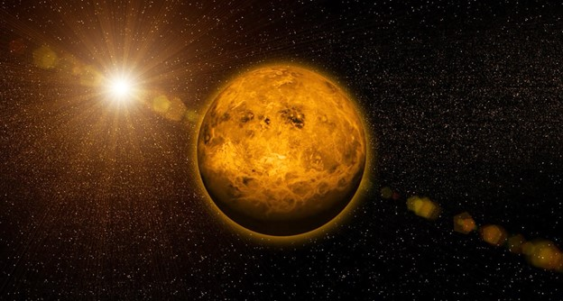

Венера
Следующая планета от Солнца — Венера. Мы знаем, что у нее есть атмосфера. Впервые ее обнаружил еще Михаил Ломоносов во время очень редкого события — прохождения Венеры по диску Солнца. Так что люди уже довольно давно могли фантазировать о том, что на Венере может быть жизнь. Но на Венере слишком жарко, и атмосфера состоит вовсе не из того, чего хотелось бы земным живым существам. Так что, по всей видимости, жизни на Венере нет.
Вернуться на главную